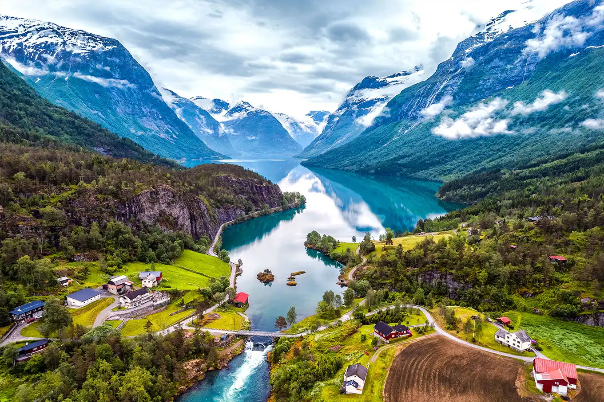

Países Nórdicos
Os países nórdicos são uma região geográfica e cultural no Norte da Europa, inclui os estados soberanos da Dinamarca, Finlândia, Islândia, Noruega e Suécia.
Os países nórdicos têm muito em comum em seu modo de vida, história , religião e modelo socioeconômico . Possuem uma longa história de uniões políticas e outras relações estreitas, mas hoje não formam um único Estado ou federação. Os países nórdicos agrupam-se perto do topo em inúmeras métricas de desempenho nacional, incluindo educação, competitividade económica, liberdades civis, qualidade de vida e desenvolvimento humano. Cada país tem o seu próprio modelo económico e social, por vezes com grandes diferenças em relação aos seus vizinhos. Ainda assim, partilham, em graus variados, aspetos do modelo nórdico de economia e estrutura social. Isto inclui uma economia de mercado mista combinada com sindicatos fortes e um setor de bem-estar social universalista financiado por impostos elevados, reforçando a autonomia individual e promovendo a mobilidade social . Existe um elevado grau de redistribuição de rendimentos, um compromisso com a propriedade privada e pouca agitação social.

A área combinada dos países nórdicos é de 3.425.804 quilômetros quadrados (1.322.710 milhas quadradas). Calotas polares e geleiras inabitáveis compõem cerca de metade dessa área, principalmente a Groenlândia. Em setembro de 2021, a região tinha mais de 27 milhões de habitantes. Especialmente em inglês, Escandinávia é às vezes usada como sinônimo de países nórdicos, mas esse termo se refere mais propriamente às três monarquias da Dinamarca, Noruega e Suécia. Geologicamente, a Península Escandinava compreende o território continental da Noruega e da Suécia e a parte mais ao norte da Finlândia.